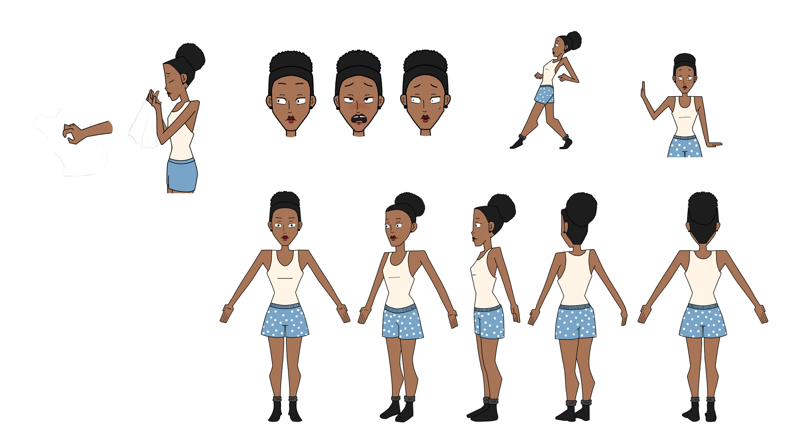
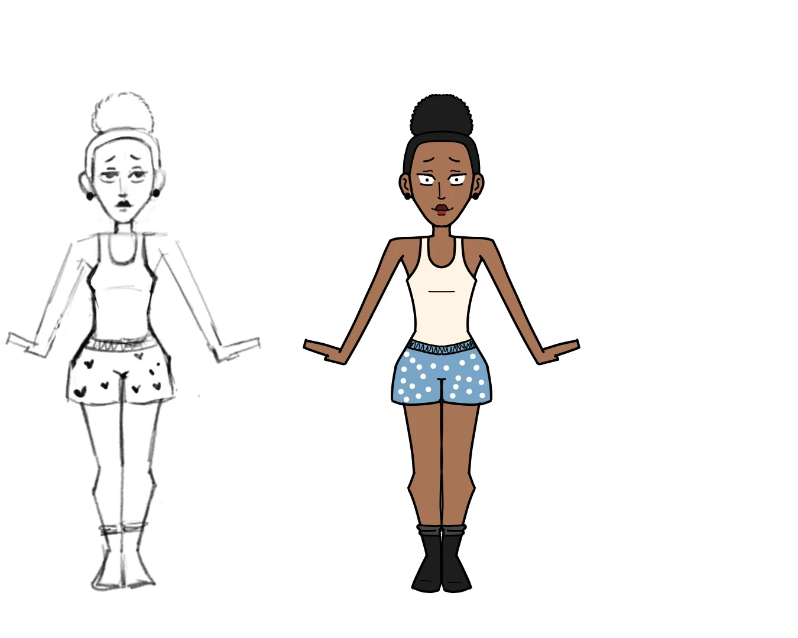
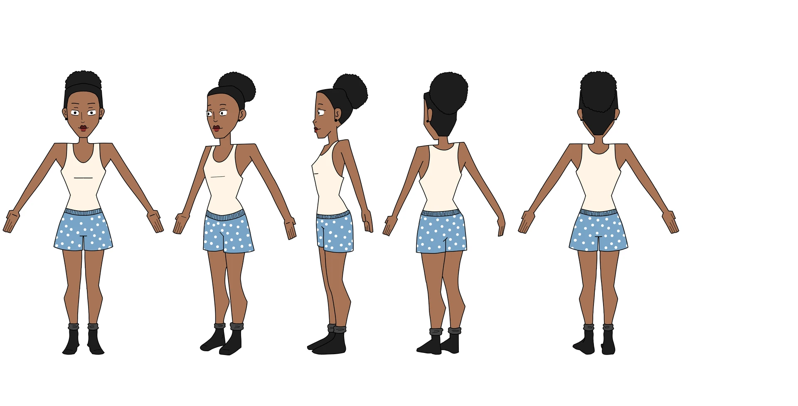
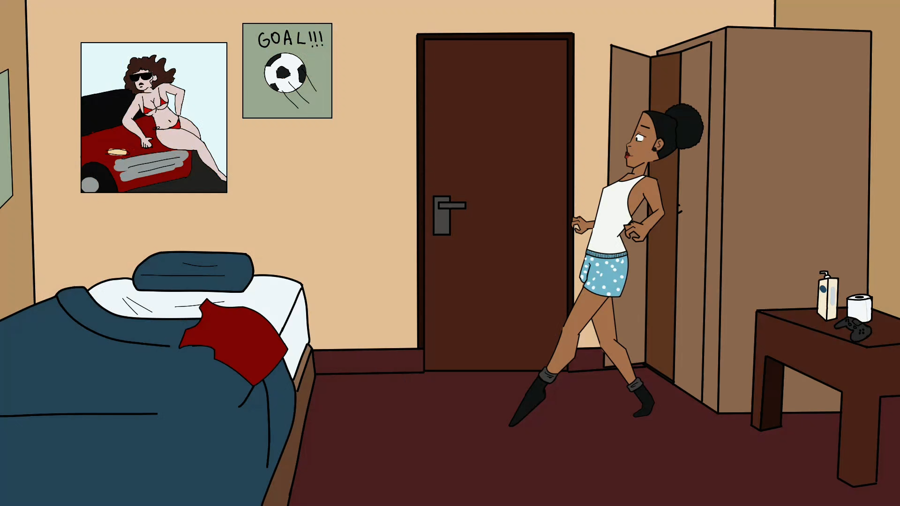
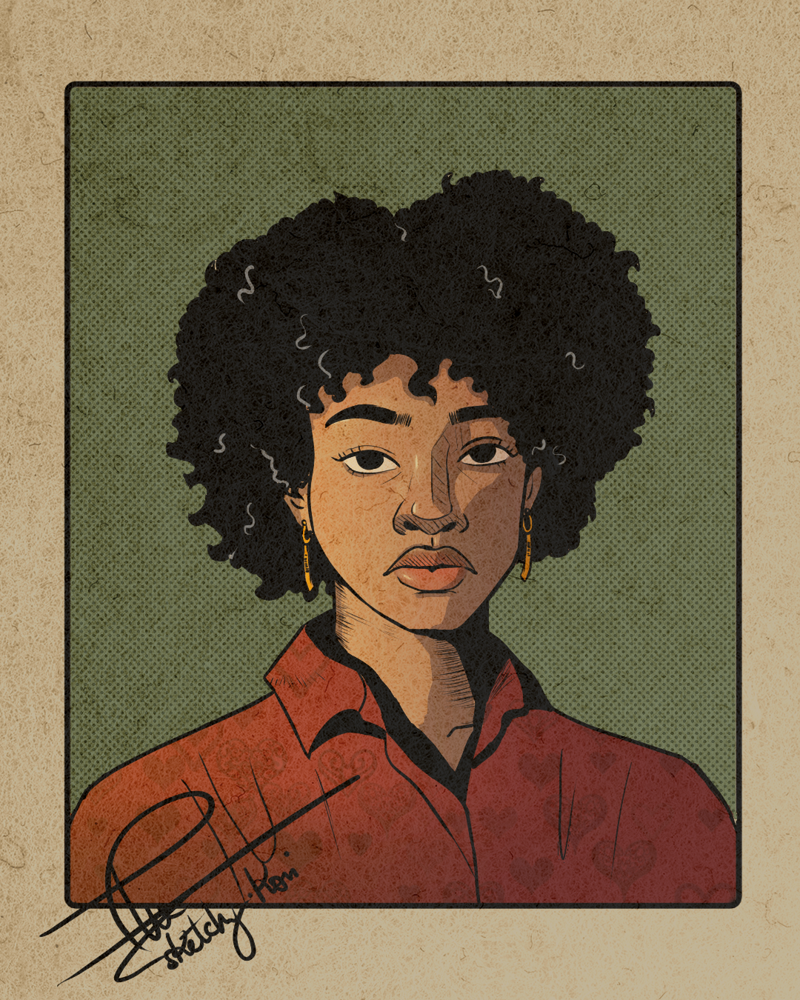
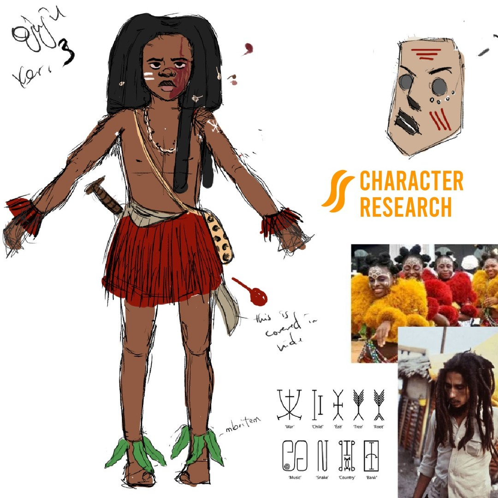
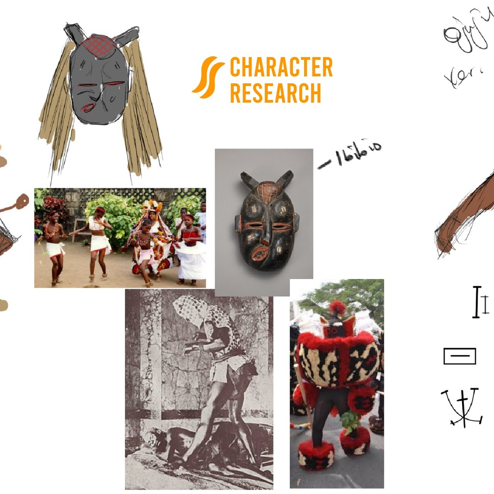
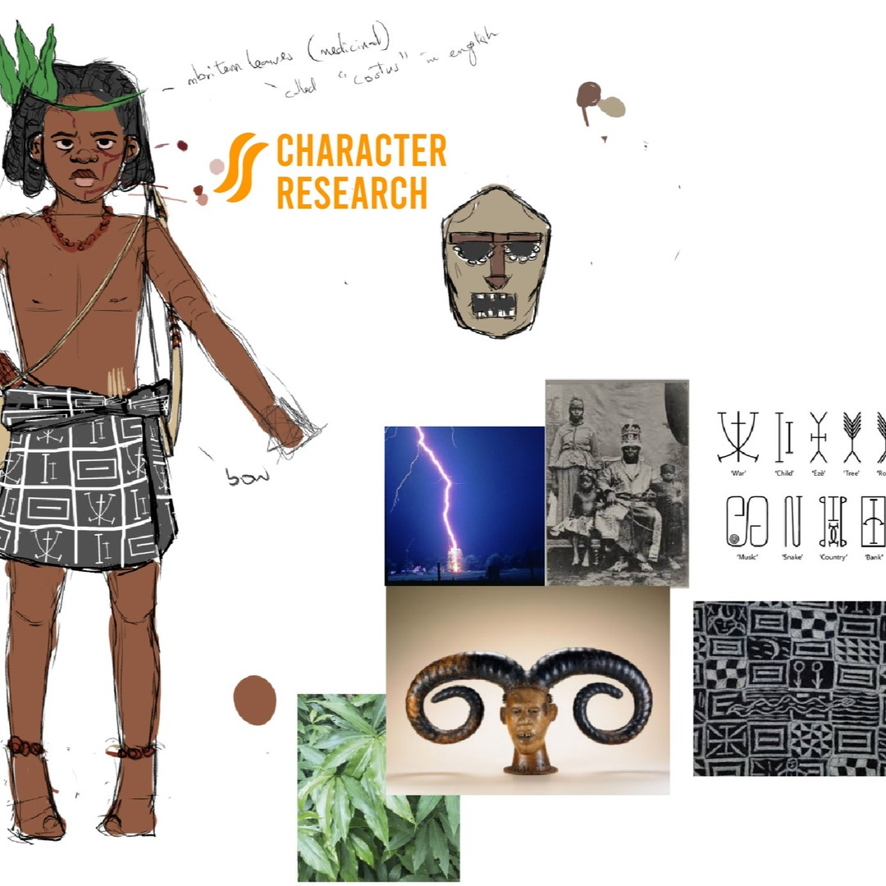
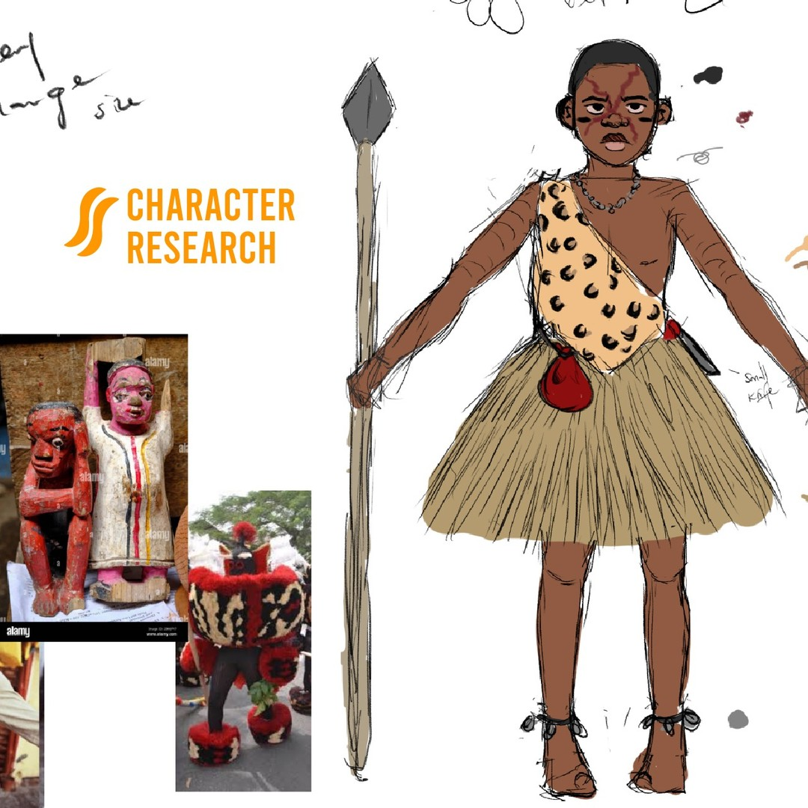
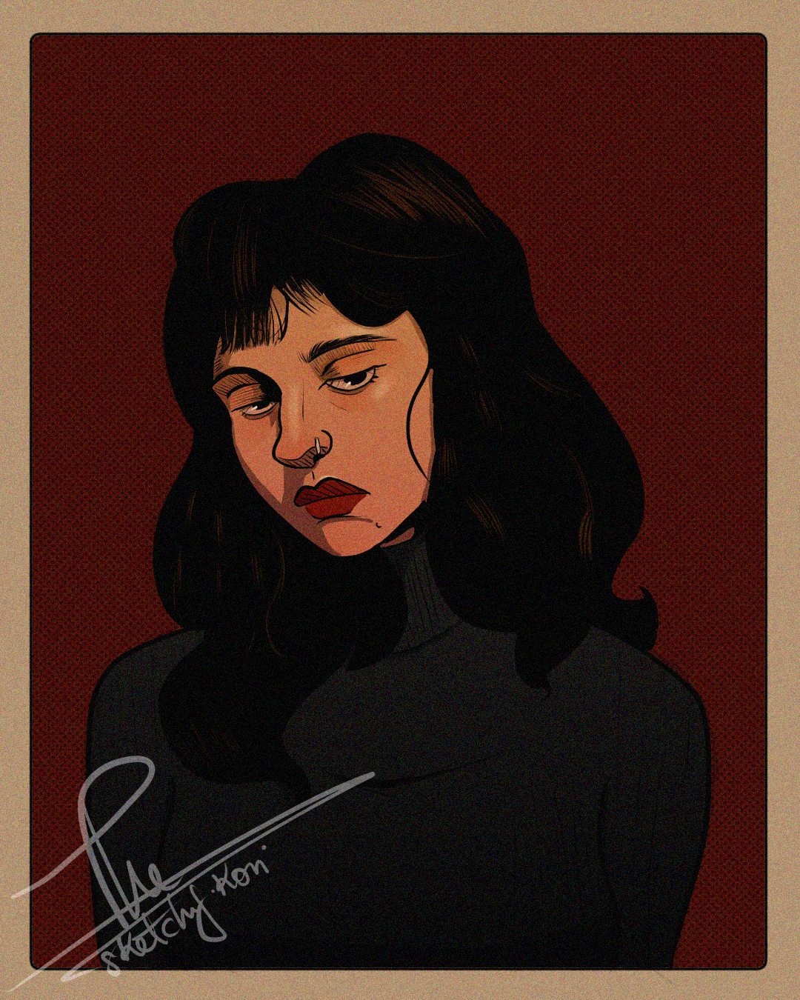

Illustration & Visual Development
Character designs, visual development and illustrations created for animation, with an emphasis on production-ready workflows.
Yes, It's My Handwriting

A portrait illustration created in Krita, exploring the use of color, texture and lighting to create a visually striking image. The project emphasizes character design, composition and digital painting techniques inspired by the Pop Art movement.
The Sniff Test Sheet

Designed specifically for cut-out rigging in Toon Boom Harmony. Limbs, torso and facial components were planned with deformation, readability and efficient animation in mind while maintaining expressive silhouettes.
Production Assets



Portrait of a Girl Unnamed

A portrait illustration created in Krita, exploring a vintage aesthetic with a focus on composition, color, and texture.
Ojuju Calabar Character Exploration

A character concpet exploration for the animated short film "Ojuju Calabar", created in Collaboration with The Sonder Lab and Khynetic Studios. Available on Youtube: here
Production Assets



Portrait of a Girl Unnamed B

A portrait illustration created in Krita, exploring a vintage aesthetic with a focus on composition, color, and texture.